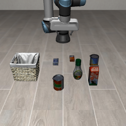
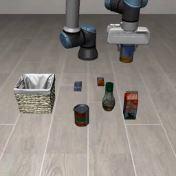
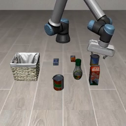

A は Franka、B は UR5e、0 はスープ。やるべきタスクはスープをカゴに入れること。50 配置・seed 7・300 ステップ。2026-11-05。
| 条件 | やったこと | A0 → A0 | A0 → B0 |
|---|---|---|---|
| さらに前 | Franka の学習統計をそのまま掛ける | 36/50 | 0/50 |
| 正規化だけ | 位置・姿勢・閉じ具合を共通の物理レンジへ | 34/50 | 実質 0/50 |
| 腕なし画像 | 学習・推論の RGB から腕を灰色に塗る | 32/50 | 0/50 |
| UR に Franka の手 | Panda グリッパを付け、手先開始を Franka に合わせる | — | 13/50 |
手を付けて開始位置を揃えると、UR でもカゴに入る回が出た。公式判定 12/50、カゴ 13/50、持ち上げ 15/50。重みはどれも Franka スープ（A0）。
| 内容 | |
|---|---|
| 腕 | UR5e のまま（青いアーム） |
| 手 | Franka の Panda グリッパ。実機なら改造になる |
| 開始位置 | Franka の手先へ OSC で寄せる。ずれ 15 cm → 5 mm |
| グリッパの数字 | Franka と同じ開き。正規化も Franka の式 |
公式評価から 4 本。やるべきタスクは UR5e でスープをカゴへ。重みは Franka スープ。



腕を灰色に塗った評価。A0→B0 は 0/50 のまま。
| 表し方 | −1 | +1 | |
|---|---|---|---|
| 位置 xyz | メートルのまま | −0.31, −0.345, 0 | 0.26, 0.375, 0.45 |
| 姿勢 | 真下（x 軸 π）からのずれ | −0.5 rad | 0.5 rad |
| グリッパ | 閉じ具合 0〜1 を 2 回。Franka は 1−幅/0.08、UR5e は関節/0.8 | 全開 | 全閉 |
| 行動 7D | OSC。1 で 5 cm。グリッパ −1 開 / +1 閉 | −1 | 1 |
位置の範囲は LIBERO-Object 全 10 タスク×50 配置の物体・カゴ中心に 10 cm 余白。リークなし。ガウシアンノイズなし。UR に Franka の手を付けた評価では、グリッパは Franka の式だけを使う。